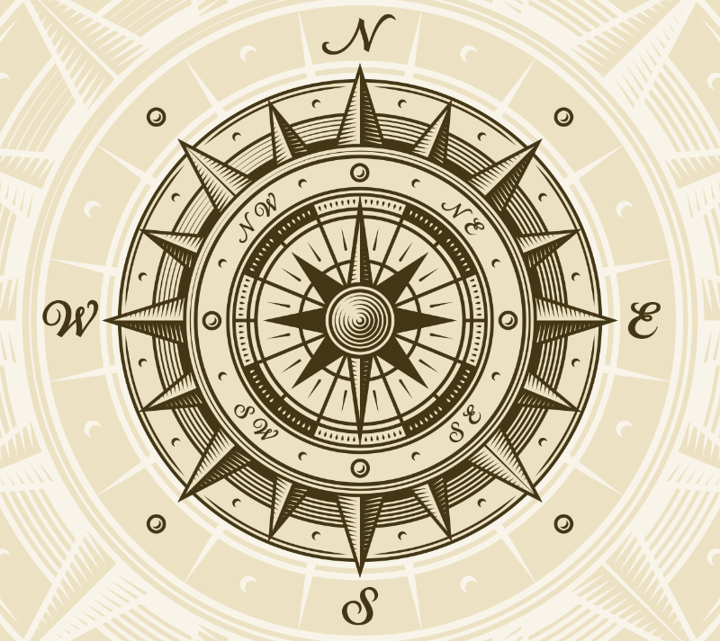

Mental Habit: Impact Thinking in Engineering Education
1. Description and Theoretical Framework
Definition and Importance
Impact thinking is a mental habit characterized by the ability to anticipate, analyze, and evaluate the potential long-term and multifaceted consequences of engineering decisions and designs. This habit involves systematically considering how engineering choices might affect various stakeholders, environments, and systems over different time horizons—from immediate effects to consequences that might unfold decades later.

For engineers, impact thinking is essential because their designs and decisions often have far-reaching implications that extend well beyond the immediate technical problem. As noted in recent research, engineering education must equip students to “consider both the short-term and long-term consequences” of their work to “ensure a strong financial future” while addressing “social, economic, and environmental responsibility” Zoe Talent Solutions (2023). The development of impact thinking as a habit helps engineers balance competing interests, identify potential unintended consequences, and make decisions that align with sustainability goals and ethical principles.
Theoretical Framework: The Temporal-Spatial-Ethical Matrix
The development of impact thinking can be conceptualized through a three-dimensional matrix that engineers can use to evaluate potential consequences:
-
Temporal Dimension: Considering impacts across different time frames:
- Immediate effects (during implementation)
- Short-term effects (1-5 years)
- Medium-term effects (5-20 years)
- Long-term effects (20+ years)
- Intergenerational effects
-
Spatial Dimension: Considering impacts across different scales:
- Local effects (immediate vicinity)
- Regional effects (surrounding communities)
- National effects (policy and societal impacts)
- Global effects (international and planetary impacts)
-
Ethical Dimension: Considering impacts across different stakeholders:
- User/client impacts
- Community impacts
- Environmental impacts
- Economic impacts
- Social justice impacts
This framework helps engineers develop the habit of thinking broadly and deeply about the implications of their work. By regularly practicing this three-dimensional analysis, engineering students can internalize impact thinking as an automatic cognitive process that becomes second nature in their professional practice.
Engineering educators have recognized that developing this habit requires “integrating practice and application” Nature (2024) and training students to “understand that their beliefs or understanding of a concept may be incorrect” Brower (2023). Impact thinking thus requires both intellectual humility and systems thinking approaches that challenge engineers to move beyond narrow technical solutions.
2. Engineering Education Applications
Detailed Implementation: The Watershed Infrastructure Impact Analysis Project
Overview
The Watershed Infrastructure Impact Analysis Project is a semester-long course activity designed for third-year civil engineering students that develops impact thinking through the analysis of proposed water management infrastructure. Students evaluate a proposed stormwater management system through multiple lenses of time, space, and stakeholder impacts, training them to habitually consider the broader implications of engineering decisions.
Technical Setup and Materials
Project Resources:
- Detailed case study of a proposed urban stormwater management system including:
- Technical specifications (pipe sizes, detention basin dimensions, etc.)
- Initial environmental impact assessment
- Project budget and timeline
- Maps of the watershed and surrounding communities
- Historical rainfall and flooding data
- Demographic and socioeconomic data for affected areas
- Land use and development plans
Technical Tools:
- Hydrologic modeling software (HEC-HMS)
- GIS mapping tools
- Life cycle assessment software
- Multi-criteria decision analysis tools
- Systems dynamics modeling tools
- Infrastructure resilience assessment frameworks
Supporting Materials:
- Decision matrices for temporal-spatial-ethical impact evaluation
- Stakeholder identification templates
- Impact uncertainty assessment guides
- Long-term projection methodologies
Implementation Process
Phase 1: Technical Analysis and Baseline Projection (3 weeks)
- Students conduct a traditional engineering analysis of the proposed stormwater system:
- Hydrologic performance under current design storm conditions
- Structural integrity and material specifications
- Compliance with current codes and regulations
- Cost-benefit analysis using standard metrics
- Teams develop a baseline projection of system performance over a 50-year design life assuming stationary conditions:
- Physical deterioration and maintenance requirements
- Basic performance metrics under design conditions
- Standard economic return on investment calculations
Phase 2: Expanded Impact Horizon Analysis (4 weeks)
-
Students systematically expand their impact analysis using the temporal-spatial-ethical matrix:
- Temporal Expansion: Teams project consequences under changing climate scenarios, with consideration of:
- Increased rainfall intensity and frequency
- Changes in development patterns over decades
- Infrastructure aging and degradation
- Shifts in regulatory requirements
- Spatial Expansion: Teams analyze impacts beyond the immediate project area, including:
- Downstream communities
- Regional watershed effects
- Impacts on adjacent natural systems
- Connectivity to other infrastructure systems
- Stakeholder Expansion: Teams identify impacts across diverse stakeholders:
- Environmental justice considerations for neighborhoods of different socioeconomic status
- Intergenerational equity in maintenance burdens
- Wildlife and ecosystem impacts
- Impacts on future development options
- Temporal Expansion: Teams project consequences under changing climate scenarios, with consideration of:
-
Weekly “Impact Horizon Expansion” sessions where teams are challenged to identify consequences they hadn’t previously considered
Phase 3: Alternative Solutions and Trade-off Analysis (4 weeks)
-
Teams develop alternative designs that might better address the expanded impact considerations:
- Green infrastructure alternatives
- Distributed vs. centralized approaches
- Adaptive management strategies
- Hybrid gray-green infrastructure solutions
-
Students conduct comparative impact analyses of alternatives using:
- Multi-criteria decision analysis
- Stakeholder value mapping
- Resilience assessment
- Intergenerational equity metrics
-
Teams explicitly identify trade-offs between competing values and stakeholders:
- Current costs vs. future benefits
- Technical efficiency vs. environmental impact
- Reliability vs. adaptability
- Quantifiable vs. non-quantifiable impacts
Phase 4: Decision Recommendation and Reflection (3 weeks)
-
Teams develop final recommendations that explicitly address:
- Known impacts across all dimensions of the matrix
- Uncertainties and potential unintended consequences
- Opportunities for adaptive management
- Monitoring recommendations for unanticipated impacts
-
Each student completes an individual reflection on how their thinking evolved:
- Initial vs. final impact considerations
- Surprises encountered during the expanded analysis
- Value conflicts identified and how they were addressed
- How they would approach future engineering projects differently
-
Final presentation to a panel including:
- Professional engineers
- Community representatives
- Environmental advocates
- Municipal officials
Engineering Learning Outcomes
This project develops several essential engineering competencies:
- Technical Analysis: Students gain experience with hydrologic modeling, infrastructure design, and performance assessment
- Systems Thinking: Students develop the ability to understand interconnected effects across natural and built systems
- Stakeholder Analysis: Students learn to identify and consider diverse stakeholders affected by engineering decisions
- Uncertainty Management: Students practice making decisions with incomplete information about future conditions
Most importantly, the project cultivates impact thinking as a mental habit by:
- Creating a structured method for expanding consideration beyond immediate technical performance
- Providing repeated practice in identifying “non-obvious” consequences
- Developing cognitive frameworks that can be applied to future engineering decisions
- Normalizing the inclusion of long-term and broad-scale impacts in engineering analysis
The project has been successfully implemented in civil engineering programs, with assessment data showing that students who complete the project demonstrate significantly increased consideration of long-term impacts and stakeholder concerns in subsequent design projects compared to students who received traditional engineering education.
3. Assessment and Measurement
Indicators of Impact Thinking as a Mental Habit
Observable behaviors that indicate impact thinking has become habitual in engineering students include:
- Spontaneous consideration of long-term consequences without prompting
- Automatic identification of diverse stakeholders affected by decisions
- Regular questioning of assumptions about future conditions
- Integration of impact analysis into initial design phases rather than as an afterthought
- Recognition of interconnections between technical decisions and broader systems
- Consideration of both quantifiable and non-quantifiable impacts
- Acknowledgment of value conflicts and ethical dimensions in technical decisions
Assessment Methods
1. Impact Horizon Mapping Students can be asked to create conceptual maps showing the potential consequences of an engineering decision across different time horizons, physical scales, and stakeholder groups. These maps can be assessed for comprehensiveness, depth, and identification of non-obvious impacts.
2. Reflective Journals Regular reflective journal entries can document how students’ consideration of impacts evolves over time. These journals can be analyzed for growth in the breadth and depth of impact considerations.
3. Decision Justification Analysis When making design choices, students can be required to provide written justifications that explicitly address anticipated impacts. These justifications can be assessed for the range of impacts considered and the depth of analysis.
4. Multi-Criteria Decision Analysis Students can be assessed on their ability to develop and apply appropriate criteria for evaluating engineering alternatives that incorporate diverse impacts and stakeholder values.
5. Scenario Testing Students can be presented with novel engineering scenarios and assessed on their ability to quickly identify potential impacts across different dimensions without specific prompting to do so.
6. Pre/Post Surveys Validated instruments can measure changes in students’ attitudes toward considering long-term and broad-scale impacts of engineering decisions before and after educational interventions.
4. Challenges and Considerations
Potential Barriers
1. Technical Focus in Engineering Education Traditional engineering education often emphasizes technical problem-solving with less attention to broader impacts, creating resistance to incorporating impact thinking Tandfonline (2009). Faculty and students may view impact analysis as “soft” or peripheral to “real” engineering.
2. Prediction Uncertainty Analyzing long-term impacts involves inherent uncertainties that can make students uncomfortable and lead them to avoid such analysis altogether. The challenges of making reliable long-term predictions can discourage systematic impact thinking.
3. Complexity and Cognitive Load Impact thinking requires consideration of multiple dimensions simultaneously, creating high cognitive load. Students may resort to simplistic analyses when faced with overwhelming complexity.
4. Disciplinary Silos Engineering education often occurs in disciplinary silos, whereas effective impact thinking requires interdisciplinary perspectives and knowledge that crosses traditional boundaries.
5. Assessment Challenges Traditional engineering assessment methods (exams, problem sets) may not effectively measure impact thinking abilities, making it difficult to evaluate and reinforce this habit.
Mitigation Strategies
1. Integrating Impact Analysis Throughout Curriculum Rather than treating impact thinking as a separate topic, it should be integrated into technical courses from the beginning. Faculty can model impact thinking in how they present technical content.
2. Embracing Uncertainty Engineering education should explicitly teach methods for making decisions under uncertainty and help students become comfortable with probabilistic and scenario-based approaches to future impacts.
3. Scaffolded Complexity Students need scaffolded experiences that gradually increase in complexity, starting with simpler impact analyses and building toward more comprehensive approaches as they develop the cognitive frameworks to manage them.
4. Interdisciplinary Collaboration Engineering programs can partner with other disciplines (environmental studies, sociology, public policy) to provide students with multiple perspectives on impact assessment. These collaborations help students develop more holistic viewpoints on engineering impacts.
5. Authentic Assessment Assessment methods should include realistic engineering scenarios where impact thinking is essential. Industry partners can help develop and evaluate authentic assessment tasks that mirror real-world decision contexts.
5. References
Brower, E. (2023). How Classrooms Can Promote Intellectual Humility—Or Discourage It. Greater Good Berkeley. https://greatergood.berkeley.edu/article/item/how_classrooms_can_promote_intellectual_humility_or_discourage_it
Herreid, C. F., Schiller, N. A., & Herreid, K. F. (2021). Case studies and the flipped classroom. Journal of College Science Teaching, 42(5), 62-66.
IEEE (2022). New Identity of Engineering in 21st Century: Social Responsibility and Sustainability in Engineering Education. IEEE Teaching Excellence Hub. https://teaching.ieee.org/social-responsibility-and-sustainability-in-engineering-education/
Motion Drives and Controls (2024). The Role of Sustainability in Engineering. https://www.motiondrivesandcontrols.co.uk/blog/engineering-ethics-and-its-impact-on-society
National Academy of Engineering. (2004). Emerging Technologies and Ethical Issues in Engineering: Papers from a Workshop. Washington, DC: The National Academies Press. https://nap.nationalacademies.org/read/11083/chapter/7
Science Direct (2023). Empowering students’ engineering thinking: An empirical study of integrating engineering into science class at junior secondary schools. https://www.sciencedirect.com/science/article/abs/pii/S1871187123001323
Sustainability (2020). Innovation in Engineering Education for Sustainable Development—Introduction to a Special Issue. MDPI. https://www.mdpi.com/2071-1050/12/19/8132
Tandfonline (2009). A historico-ethical perspective on engineering education: from use and convenience to policy engagement. https://www.tandfonline.com/doi/full/10.1080/19378620902725166
The Ethical Engineer (2017). Engineering Ethics and Its Impact on Society. Texas Tech University. https://ethicalengineer.ttu.edu/articles/engineering-ethics-and-its-impact-on-society
Yale Poorvu Center for Teaching and Learning (2024). Case-Based Learning. https://poorvucenter.yale.edu/strategic-resources-digital-publications/strategies-teaching/case-based-learning
Zoe Talent Solutions (2023). Balancing short-term Profitability with long-term Sustainability in Business Management. https://zoetalentsolutions.com/balancing-short-term-profitability-with-long-term-sustainability-in-business-management/